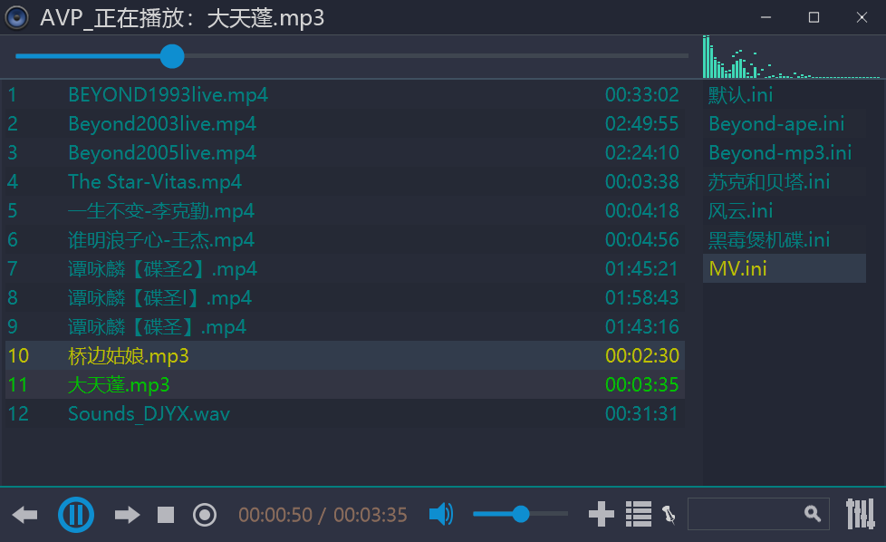
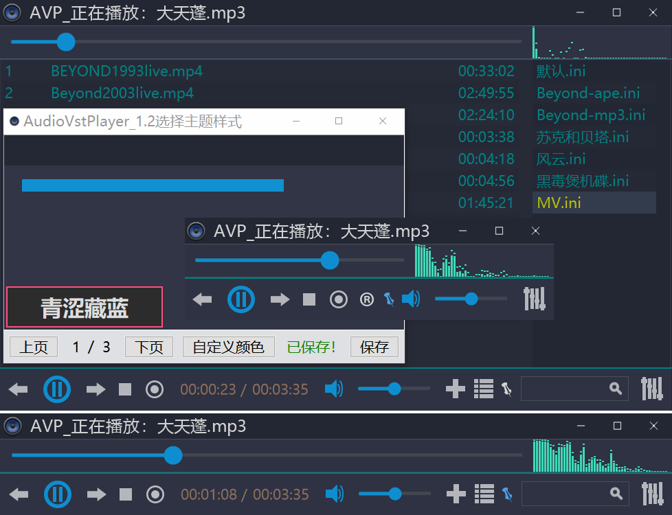
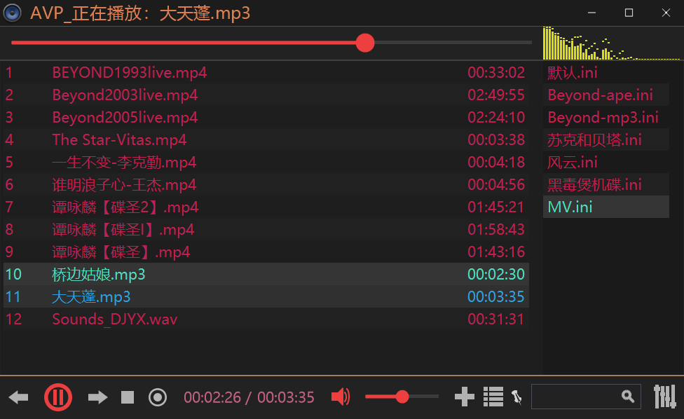
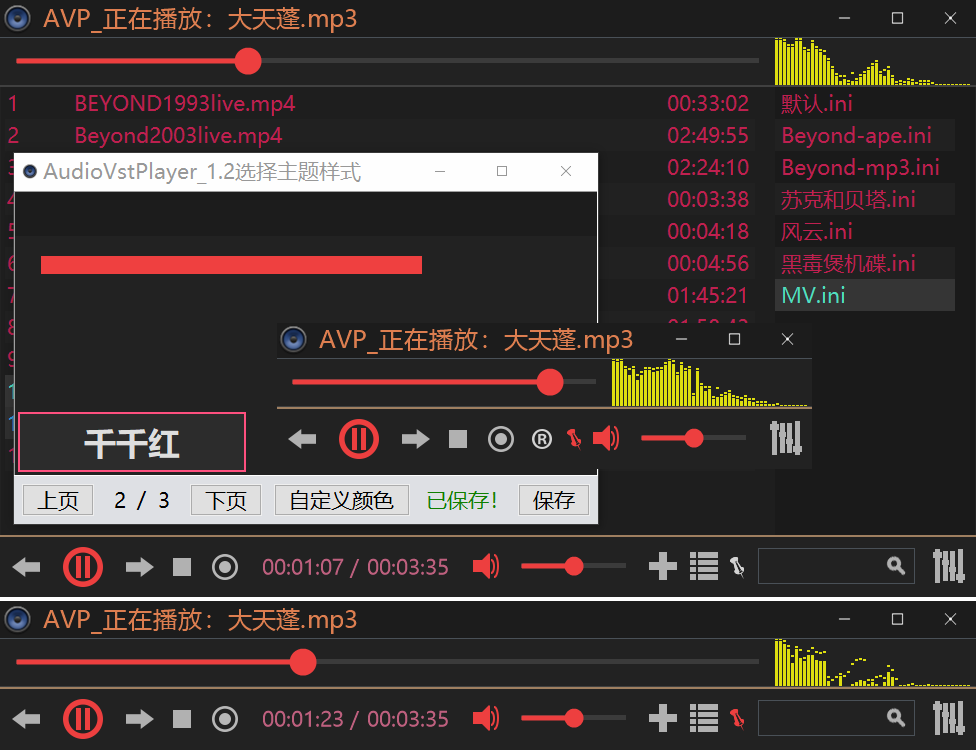
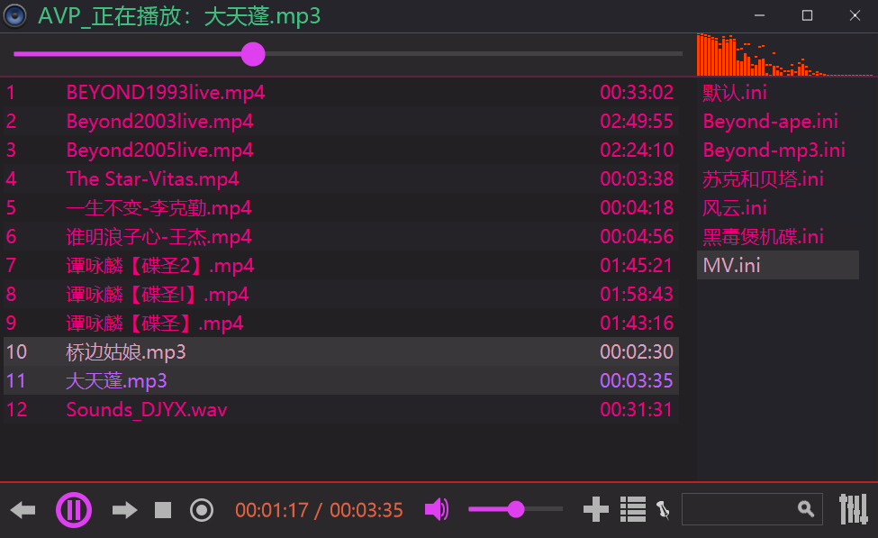
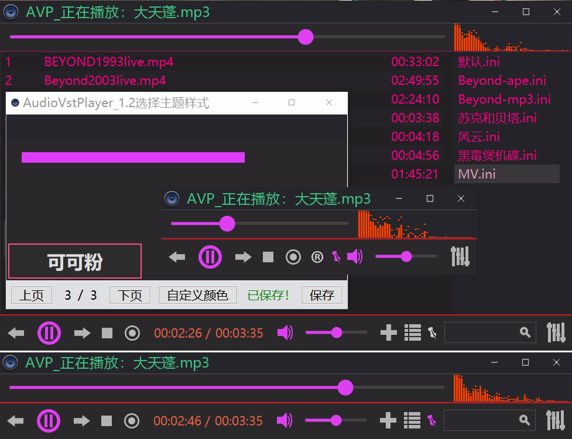
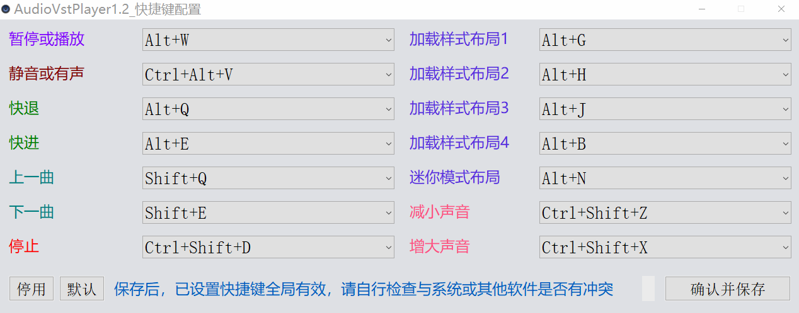
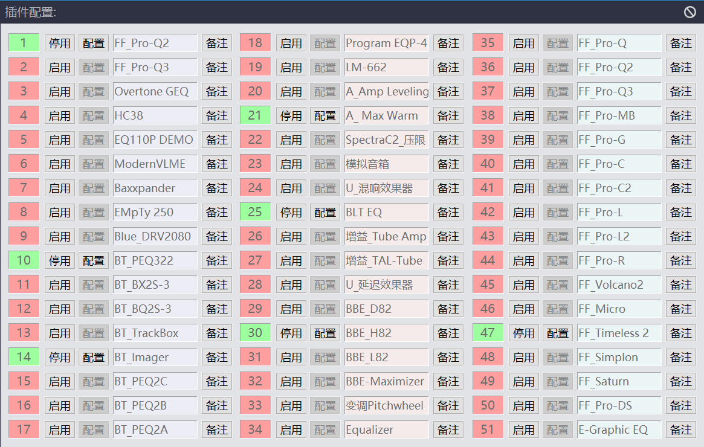
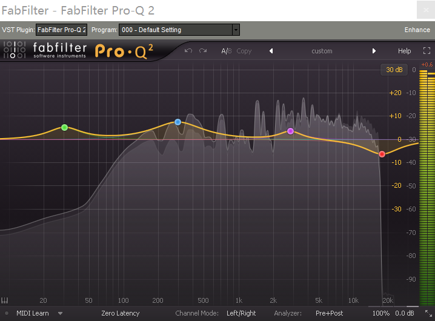

新动态：电玩街机[全新机台，对比旧版资源使用率更低，声音模拟更完善]已上线[浏览器跨平台游玩，支持电脑端、手机端、平板、电视盒子等平台设备...]支持自定义按键，支持手柄、键盘等外设输入！
站点公告：本站为非盈利性质个人站点，必然偶尔会发生无法访问的情况，介时还请多多理解，尽量第一时间恢复访问！
作者：感谢所有支持过本站的朋友们！愿天黑有灯，下雨有伞，平安幸福度一生！
无事阁原创软件_作者：不找事儿
★ 本站网址 ★ http://www.buzhaoshi.top/ ★ 或 ★ http://buzhaoshi.top/ ★
AudioVstPlayer(本地音乐+51个VST插件槽位管理_免费纯净音频播放器)2023.04.18
软件介绍：AudioVstPlayer1.2本地音乐播放器是作者(不找事儿)免费提供给大家使用的，超纯净软件界面还您一片净土，可通过自定义颜色或主题来深度定制搭配出不同的视觉效果，简单易上手的操作，适合任何年龄段喜欢音乐的朋友，可无限制建立列表目录，每个列表又可以无限制添加歌曲，管理本地音乐非常简单便捷。启动速度快，内存占用低，是热爱音乐的朋友不可多得的一款听歌利器，除此之外，还可通过VST插件来为音乐添加各种效果，且拥有51个VST插件的槽位用来管理VST效果插件，同样也提供了一套免费VST插件供大家测试之用(位于程序根目录的 "Plugins" 文件夹下)，包含了常用的效果，比如EQ均衡器以及混响效果等，更多功能细节还请自行体验......
最新版附件下载_AudioVstPlayer1.2(2023.04.24)： audiovstplayer20230424.rar
最新版AudioVstPlayer1.2配套自定义皮肤编辑器下载： audiovstplayerskinedit.rar
软件截图预览：






AudioVstPlayer所有的支持格式：flac,ape,wav,mp4,mp3,mp2,m4a,mkv,ogg,avi,wmv,wma
新增功能：
1.新增拖拽功能，可通过拖拽的方式添加文件或文件夹，接收区域为列表区域
2.新增功能快捷键，可通过(自定义快捷键)选项来配置功能快捷键，全局有效

3.除原本藏蓝主题外，新增两款深色主题，分别为【千千红】与【可可粉】，定制颜色自由度更宽，可搭配出更好看的整体颜色，可通过窗口顶部或底部右键菜单【选择主题样式】来选定主题
4.新增两套按钮，分别对应【千千红】与【可可粉】，使主题更加美观
5.新增列表区域右键【打开选中项所在目录】功能
6.新增列表区域右键【用视频播放器播放选中项】功能，可用来播放视频文件，也可播放音频
7.新增展开与收起功能，随时随地展开与收起窗口，可通过鼠标点击功能图标或通过【自定义快捷键】设定此功能
8.新增五种布局样式，可通过右键菜单直接定位标准尺寸，也可通过拖拽窗口边缘调节大小，智能判断宽度以何种样式呈现界面，以及两种默认配色方案新版(可可粉)和旧版配色(深夜绿)
9.新增停止或暂停时音频频谱区域的显示为随机画线，使其美观度更上一层楼
10.更多新增功能细节无法一一枚举，还请自行体验
功能改动：
1.使用新的进度条替代了旧版进度条，可通过鼠标拖拽调节播放进度，也可通过鼠标滚轮(向前滚动为快退每次三秒时长，向后滚动为快进每次三秒时长)或快捷键来调节播放进度(音量调节同理)，操作更加人性化，界面更加美观
2.使用新的列表目录替代了旧版专辑目录，由上方移动到右侧，集成右键带单新建列表功能，多用右键菜单，操作更加方便快捷
3.修复了设置快捷键窗口的恢复默认按钮会恢复错误的快捷按键，现在已经可正常恢复默认快捷键
4.优化了软件窗口各个区域的右键菜单，去掉重复的菜单功能，看起来更加简洁明了
5.优化列各种布局的显示效果，不在自动转换目录与名称的显示模式，需手动转换
5.美化了软件界面，修复了各种已知错误，目前为止已经找不到什么错误了
说在最后：
若您喜欢本软件，可通过软件下方菜单请作者喝一瓶啤酒，仅此而已。六年匠心，只为博您一笑！终会有人喜欢它的！^^
VST插槽界面：


★ 本站网址 ★ http://www.buzhaoshi.top/ ★ 或 ★ http://buzhaoshi.top/ ★